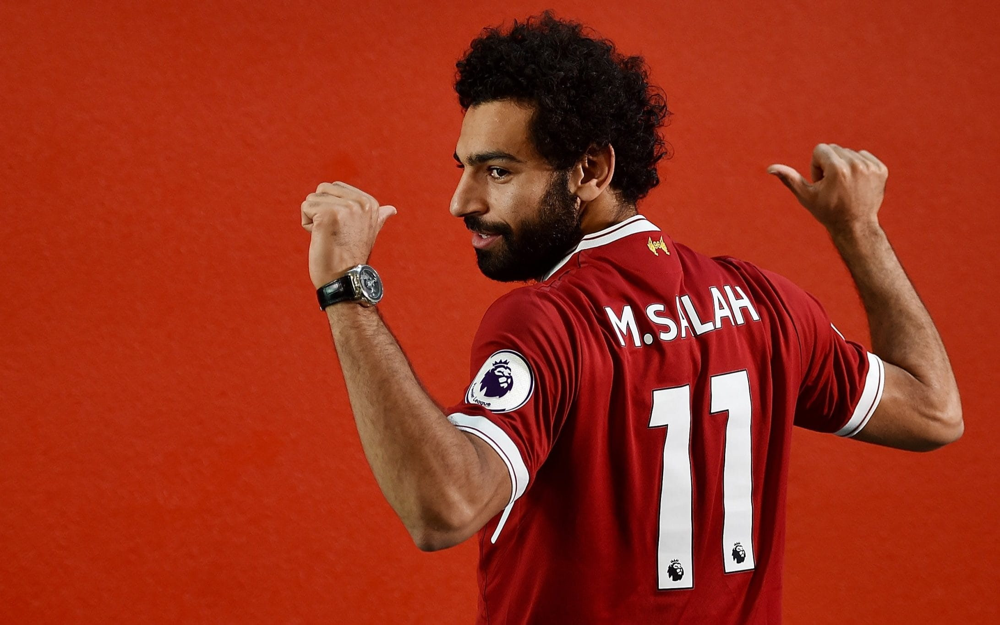
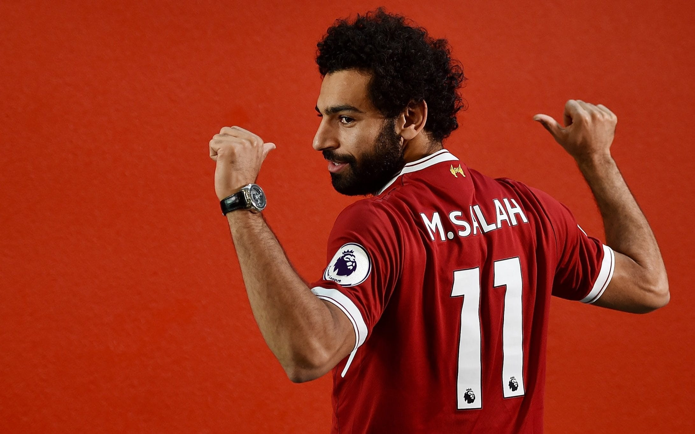

سَنتر
سَنتر
 



أهم أرقام محمد صلاح مع ليفربول فى دوري أبطال أوروبا!!
ينتظر النجم المصري محمد صلاح، قياده فريقه ليفربول الإنجليزي ، في مواجهة ضيفه بنفيكا البرتغالي بالتاسعة مساء اليوم الأربعاء، في إياب الدور ربع النهائي من منافسات بطولة دوري أبطال أوروبا للموسم الحالي 2021-22.
موعد مباراة ليفربول وبنفيكا:
ويحتضن ملعب "أنفيلد" مباراة ليفربول وبنفيكا في تمام الساعة التاسعة مساء اليوم الأربعاء، بتوقيت القاهرة.
وقدم الفرعون المصري محمد صلاح مستويات مميزة للغاية في دوري أبطال أوروبا قبل مباراة ليفربول ضد بنفيكا، حيث أصبح في خلال 3 سنوات فقط الهداف التاريخي لليفربول في دوري أبطال أوروبا.
وشارك محمد صلاح مع ليفربول، في 52 مباراة بدورى أبطال أوروبا، وسجل خلالها 34 هدفًا، ليصبح عدد أهداف صلاح في دوري أبطال أوروبا سواء دور المجموعات أو الملحق هو 40 هدفًا في 75 مباراة.
البداية كانت موسم 2013-14، حيث شارك صلاح مع بازل في 10 مباريات في دوري الأبطال، سجل خلالهم 5 أهداف.
بعد ذلك انتقل لتشيلسي وشارك معه في مباراتين في دوري أبطال أوروبا، لكنه لم يسجل، ومع وصوله إلى روما، الايطالى شارك مو في 7 مباريات في الموسم الأول، ومباراتين في الموسم الثاني وسجل هدف وصنع مثله.
أما مع ليفربول، شارك محمد صلاح في 52 مباراة، وسجل خلالها 34 هدفًا، وصنع 10 أهداف ليصبح عدد أهداف صلاح في دوري أبطال أوروبا سواء دور المجموعات أو الملحق هو 40 هدفًا في 75 مباراة.
أما في الموسم الحالي من دورى أبطال أوروبا فقد شارك محمد صلاح في 9 مباريات وسجل خلالها 8 أهداف قبل مباراة ليفربول ضد بنفيكا .
ووضع ليفربول قدما في نصف النهائى بعدما حقق فوزا كبيرا في مباراة الذهاب التي أقيمت الأسبوع الماضي على ملعب "النور" بنتيجة 3-1.
ويحتاج ليفربول للفوز أو التعادل بأي نتيجة، وحتى الخسارة بفارق هدف ستكون كافية لعبور "الريدز" إلى نصف نهائي دوري أبطال أوروبا، بينما يحتاج بنفيكا إلى الفوز بفارق هدفين ليعدل النتيجة مع ليفربول ويفرض شوطين إضافيين على أصحاب الأرض، أو فارق ثلاثة أهداف للعبور إلى نصف النهائي.